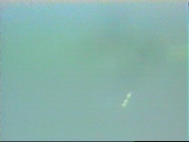

Observation au Brésil

A Musselburgh (Ecosse), observation de 2 phénomènes à la forme de
méduses lumineuses se déplaçant vers le sud-est Mather, Adrian & Jacobs, Bill: "Lothian
X-Files revealed", Scotsman.com News, 2 août 2007.
Semaine du 20 Le réseau radar du nord du Yorkshire intercepte l'écho d'un appareil
inhabituel volant selon un parcours en zigzag à 27000 km/h au-dessus de la mer du Nord.Un escadron de la
Royal Air Force fut envoyé pour intercepter l'objet, tandis que les forces aériennes hollandaises poursuivent
également l'ovni, mais les 2 chasseurs F-16 envoyés ne sont pas capables
de garder le contact avec lui. L'objet distance les F-16 hollandais en
accroissant sa vitesse jusqu'à atteindre 38400 km/h, avant de disparaître vers le Nord-Est en direction de l'océan
Atlantique Daily Mail.
Au-dessus de Pyrénnées Orientales (Languedoc-Roussillon),
le pilote d'un Boeing 727 en route vers Barcelone (Espagne) observe très loin le passage
de lumières bleues-vertes très rapides qui disparaissent dans une explosion Il s'agit probablement de la rentrée atmosphérique d'un débris spatialSEPRA: PAN
classé B.